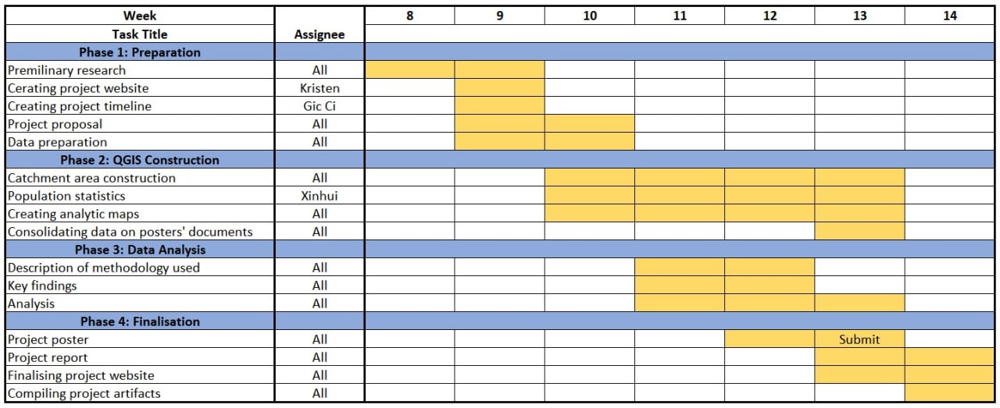

Project Proposal
Motivations
The Ministry of Transport aims to have 8 in 10 households in Singapore be within a 10 minute walk of an MRT. This was driven by the need to ensure that transit within Singapore continues to be sustainable and to reduce carbon emissions to combat climate change, which is one of the main goals highlighted in the Singapore Green Plan.
At present, most Singapore residents do not own a car. Instead, they use public transport such as buses and trains. This is due to the costliness in purchasing and maintaining a car. However, many people still find public transportation to be insufficient, with many wealthier people and families opting for car ownership instead. This is partially driven by the comfort and ease that driving provides to its riders.
However, this contributes to our carbon emissions and makes meeting the goals set by the Green Plan difficult to achieve. This is compounded by the fact that car ownership is a negative externality. Despite the convenience it affords to its owners, it aggravates traffic and is a source of various types of pollution apart from air pollution, such as noise.
This points to a need to strengthen our public transportation system and to accommodate the diverse needs of Singapore residents.
Objectives
Our project aims to understand how well TEL Stage 4 MRT Stations will serve Singaporeans in their first and last mile journeys in two parts.
Firstly, we want to evaluate the effectiveness of the locations of TEL Stage 4 MRT Stations based on the amenities (ranging from residential to commercial) captured within both Walking and Cycling Catchment Areas.
We want to analyze the types of amenities in each Catchment Areas of all TEL Stage 4 MRT Stations.
Additionally, we also want to compare all Catchment Areas to its respective Buffers (which we assume to be the ideal Catchment Areas) and provide improvement for existing road network system to increase the reach of all Catchment Areas.
Secondly, we want to evaluate the effectiveness of the locations of TEL Stage 4 MRT Stations based on subzone population captured within both Walking and Cycling Catchment Areas.
We want to analyze the proportion of subzone population in each Catchment Areas of all TEL Stage 4 MRT Stations.
For Walking Catchment Areas, we want to further analyze the population who is willing to walk to the MRT stations within each contour interval to further evaluate the effectiveness of the locations of TEL Stage 4 MRT Stations
For Cycling Catchment Areas, we want to further analyze the number of subzone captured within each contour interval to further evaluate the effectiveness of the locations of TEL Stage 4 MRT Stations instead. This is because cycling is not a popular option amongst Singaporeans (cite), thus the numbers are low and insignificant. As a result, they will not be able to provide us with deep insights.
Our Data
Our data can be found in this page
Project Scope
To assess the accessibility and effectiveness of the MRT stations, we analysed the building types and amenities within a reasonable walking and cycling distance from the stations, both via Euclidean distance and network analysis. The distances selected for walking and cycling are 1000m and 1500m.
1000m was selected for the walking distance based on the willingness to walk certain distances among Singaporeans. 80%, 50%, 30% and 15% of Singaporeans were willing to walk distances of 400m, 600m, 800m and 1000m from MRT Stations respectively. Hence, we opted to have intervals of 200m to reflect this. At a distance of more than 1000m, willingness dropped to around 10%, which is insignificant. Hence, it was cut off at 1000m as results from further analysis will not be able to provide us with greater insights.
1500m was selected as the URA builds cycling racks within 1500m of an MRT station. Hence, not everyone who is willing to cycle a certain distance will be able to do so. However, 200m intervals were still chosen for the contours as it is the same intervals used for walking. This is to ensure that similar analysis grounds for both walking and cycling catchment area. The catchment area, however, used 1600m to ensure that the intervals will still be equal. More information will be provided at the introduction of Amenities Analysis later on.
Furthermore, the population distribution was also used to calculate the potential reach to residents within the catchment areas at subzone level. More information will be provided at the introduction of Population Analysis later on as well.
Project Timeline
Our Gantt Chart
